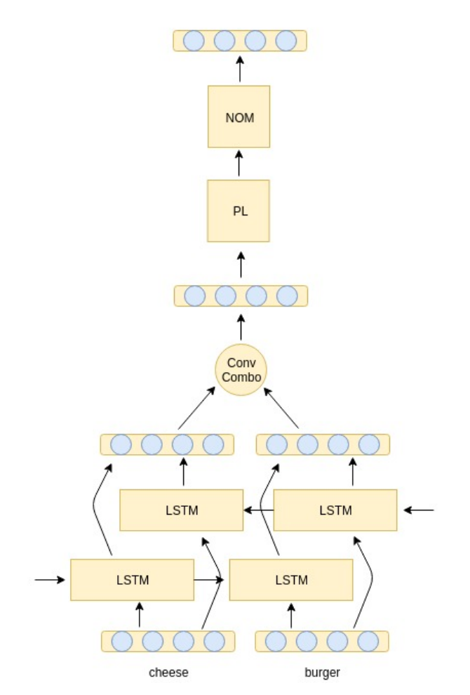

Intrinsic Evaluation of Grammatical Information within Word Embeddings
PACLIC 33
Daniel Edmiston, Taeuk Kim
한줄 요약
단어 임베딩에 담긴 어휘적 정보가 아닌 문법적 정보를 내적(intrinsic)으로 평가하는 개념 증명(proof-of-concept) 프레임워크입니다. 여섯 가지 한국어 임베딩 모델을 형태론을 인식하는 세 가지 학습자 네트워크로 증류(distillation)한 뒤, 얻어진 접사 표현을 107개 한국어 접사에 대해 수작업으로 구축한 62차원 이산 자질 공간과 비교합니다. 모든 모델이 무작위 기준선을 상회하였고, 통사 정보는 선형적 접사 표현으로도 포착되는 반면 의미 정보는 비선형성을 필요로 하며(최대 33% 중첩 vs. 무작위 2%), 음운 및 화용 자질에는 어떤 모델도 민감하지 않았습니다.

Figure 1.cheese-burger.PL.NOM의 동적 합성을 보여주는 StaffNet 학습자 구조. 어간("cheese", "burger")은 BiLSTM을 거쳐 볼록 결합(convex combination)으로 합쳐지고, 접사(PL, NOM)는 합성된 어간 표현에 행렬 변환으로 순차 적용됩니다.
배경 및 동기
신경망 기반 NLP 시스템이 분야를 주도하고 있지만, 성능 향상의 대가로 모델이 실제로 무엇을 학습하는지 이해하기 어려워졌다는 지적이 많습니다. 자연어 추론 연구(McCoy et al., 2019)는 신중하게 고른 예시로 이러한 시스템을 속일 수 있음을 보여, 모델이 진정한 언어적 일반화가 아닌 데이터셋의 휴리스틱을 학습한다는 의구심을 제기했습니다. 따라서 모델 내부에 담긴 정보를 탐색하는 방법의 중요성이 커지고 있습니다.
기존의 단어 임베딩 내적 평가 방법(예: 단어 유추 과제 -- king과 queen의 관계는 man과 무엇의 관계인가?)은 거의 전적으로 어휘 의미를 검사합니다. 고정된 표현 위에 분류기를 학습시키는 외적(extrinsic) 프로빙 방법은 형태론적, 통사적 내용을 다루어 왔지만, 하류 분류기의 성능을 통해 간접적으로만 언어 지식을 측정합니다.
핵심 아이디어: 임베딩이 파리와 프랑스의 관계를 아는지 묻는 대신, 임베딩의 기하학적 구조가 문법적 속성을 반영하는지 묻습니다. 본 논문은 연속 임베딩을 언어학적으로 설계된 이산 이진 자질 공간 -- n차원 초입방체의 꼭짓점 -- 에 놓인 정답(ground-truth) 임베딩과 비교함으로써, 두 공간 간 유사성을 어휘적 내용이 아닌 문법적 내용으로 해석할 수 있게 합니다.
왜 한국어 접사인가? (i) 한국어는 교착어로서 접사와 의미가 대체로 일대일로 대응하고, (ii) 형태론이 매우 규칙적이어서 고정밀 형태소 분석이 가능하며, (iii) 한국어 접사는 적어도 네 가지 유형의 정보를 담고 있습니다: 음운적 정보(종성 뒤의 목적격 -을 vs. 모음 뒤의 -를과 같은 이형태), 통사적 정보(결합 위치), 의미적 정보(초점 표지, 논리 연산자, 격), 화용적 정보(격식체, 높임법). 덕분에 모델이 어떤 유형의 정보에 민감한지 초점을 맞춘 실험이 가능합니다.
또 다른 난관은 대부분의 임베딩 모델(Word2Vec, GloVe, 심지어 문자/음절 수준 모델까지)이 접사라는 개념을 명시적으로 갖고 있지 않아 검사할 접사 벡터 자체가 없다는 점입니다. 본 논문은 이를 투명 모델 증류(transparent model distillation)(Tan et al., 2017, 2018)로 해결합니다: 형태론을 인식하는 학습자 네트워크가 블랙박스 임베딩을 재현하도록 학습시킨 뒤, 학습자의 접사 파라미터를 원래 모델이 포착한 정보의 대리물로 삼아 분석합니다. 저자들이 아는 한, 이는 NLP 환경에서 해석을 위해 투명 모델 증류를 적용한 최초의 사례입니다.
제안 방법
파이프라인은 네 단계로 구성됩니다: 정답 임베딩 모델 학습, 각 모델을 형태론 인식 학습자 네트워크로 증류, 접사에 대한 이산 정답 자질 공간 구축, 그리고 연속 공간과 이산 공간 간의 이웃 비교입니다.
1
정답(Ground-Truth) 임베딩 모델
세 가지 단위 수준에 걸친 여섯 가지 한국어 임베딩 모델을 한국어 위키 덤프로 학습합니다. 어휘 크기는 10,000개로 제한하고 임베딩 차원은 300으로 설정했습니다(Choi et al., 2016의 제안을 따름). 문자 수준: fastText(Bojanowski et al., 2017)와 네이버의 kor2vec(Kim et al., 2016 기반). 음절 수준: Choi et al. (2017)의 모델. 단어 수준: Word2Vec Skip-gram, Word2Vec CBOW(Mikolov et al., 2013), GloVe(Pennington et al., 2014). 그 외 하이퍼파라미터는 원 논문의 설정을 따릅니다.
2
세 가지 학습자 네트워크로의 투명 모델 증류
각 정답 모델을 형태소(KoNLPy의 Komoran 형태소 분석기로 분석)로부터 단어를 명시적으로 합성하는 세 가지 학습자 구조로 증류합니다. 학습자는 동일한 코퍼스를 순회하며 각 단어에 대한 자신의 임베딩 ŷ를 계산하고, 정답 임베딩 y와의 제곱 거리를 최소화합니다. StaffNet(Edmiston and Stratos, 2018)은 어간을 벡터로(BiLSTM과 볼록 결합으로 합성), 접사를 선형 함수, 즉 어간에 순차적으로 적용되는 300×300 행렬로 다룹니다. MRNN(Luong et al., 2013)은 이진 형태소 분석 트리 위의 재귀 신경망으로, 부모 노드를 p = tanh(W[c1; c2] + b)로 계산합니다. Tree-LSTM(Tai et al., 2015)은 같은 이진 트리 위에서 N = 2인 N-ary Tree-LSTM입니다. MRNN과 Tree-LSTM에서 접사는 300차원 벡터가 됩니다.
3
이산 정답 자질 공간
수작업으로 구축한 데이터셋은 107개 한국어 접사를 이진 자질 공간 {0, 1}62에 임베딩하며, 각 차원은 [+CODA], [+HONORIFIC]과 같은 언어학적 자질에 대응합니다. 62개 자질은 네 부분집합으로 나뉩니다: 음운 자질([±CODA], [±LOW]), 통사 자질([+POSTPOSITION], [+CONJUNCTIVE], [+X-LIMITER], [+Z-LIMITER], [+V1]..[+V4]), 의미 자질([+NOMINATIVE], [+TOPIC], [+PAST], [+CONDITIONAL], [+QUOTATIVE], [+ONLY] 등 46개), 화용 자질([±FORMAL], [+HONORIFIC], [+FAMILIAR]). 접사 전체에 걸쳐 음운 구성 5종, 통사 구성 8종, 의미 구성 55종, 화용 구성 5종이 존재합니다. 이 공간에서의 거리는 해밍 거리 dH로 정의됩니다.
4
연속 공간에서의 유사도
벡터 형태의 접사(MRNN, Tree-LSTM)에는 코사인 유사도를 사용합니다. StaffNet의 행렬 형태 접사에는 코사인 유사도를 적용할 수 없으므로 부분공간 유사도(subspace similarity)(Mu et al., 2017)를 사용합니다: 각 접사 행렬의 상위 N개 주방향을 취해 X, Y ∈ Rd×N으로 쌓고, XTY의 특이값 제곱 평균의 제곱근으로 [0, 1] 범위의 점수를 계산합니다. 유사한 접사는 어간을 유사한 부분공간으로 사상한다는 것이 기하학적 직관입니다. N은 각 모델에서 접사의 평균 분산의 25%, 50%, 75%를 설명하는 최소 주성분 개수로 선택합니다.
5
두 가지 등급화 점수를 사용한 최근접 접사 평가
각 접사에 대해 이산 공간에서 해밍 거리상 가장 가까운 접사 집합 YAff(크기 k)를 구하고, 연속 공간에서 가장 유사한 k개 접사로 ŶAff를 구성합니다. 두 점수를 보고합니다: 두 집합 간의 중첩 비율(percentage of overlap)(두 집합의 크기가 같으므로 군집 분석의 F1 척도와 동일)과, 접사에서 연속 공간 이웃들까지의 평균 해밍 거리에서 가능한 최소 거리를 뺀 해밍 오프셋(Hamming offset)입니다. 전부 아니면 전무 방식의 유추 테스트와 달리 두 척도 모두 등급화되어 있습니다. 같은 절차를 이산 공간을 각 자질 부분집합(음운, 통사, 의미, 화용)으로 제한하여 다시 수행하고 무작위 기준선과 비교합니다.
실험 결과
증류 검증
평가에 앞서, 학습자가 원래 임베딩을 충실히 재현하는지 확인합니다. 10k 어휘에 대한 정답 임베딩과 증류 임베딩 간 평균 코사인 유사도는 모든 조합에서 높게 나타났으며, R300의 거의 모든 부피가 임의의 점과 직교한다는 점을 고려하면 주목할 만한 결과입니다.
모델
StaffNet
MRNN
Tree-LSTM
kor2vec
0.971
0.840
0.952
fastText
0.949
0.824
0.946
Syllable
0.967
0.869
0.979
W2V-SG
0.953
0.755
0.920
W2V-CBOW
0.941
0.786
0.878
GloVe
0.935
0.690
0.875
62개 자질 전체에 대한 최근접 접사 과제
107개 접사 전체에 대해 평균한 중첩 비율(높을수록 우수)과 해밍 오프셋(낮을수록 우수)입니다. StaffNet은 분산의 25%를 설명하는 부분공간 차원 설정(가장 좋은 설정)을 보였으며, 50%와 75% 설정은 이보다 약간 낮은 점수를 기록했습니다.
모델
StaffNet-25% 중첩
StaffNet-25% 오프셋
MRNN 중첩
MRNN 오프셋
Tree-LSTM 중첩
Tree-LSTM 오프셋
kor2vec
12%
3.35
16%
2.82
19%
2.62
fastText
13%
3.23
18%
2.59
16%
2.63
Syllable
13%
3.18
17%
2.88
17%
3.29
W2V-SG
12%
3.17
18%
2.59
15%
3.01
W2V-CBOW
13%
3.19
18%
2.63
16%
2.86
GloVe
10%
3.30
16%
2.80
11%
3.13
무작위
2%
4.23
2%
4.32
1%
4.35
의미 자질 부분집합
학습자 구조 간 가장 뚜렷한 대비는 이산 공간을 의미 자질(55종의 구성)로 제한했을 때 나타납니다. 선형적인 StaffNet 접사는 무작위 기준선 수준에 머무는 반면, 비선형적인 MRNN과 Tree-LSTM 접사는 최대 33%의 중첩에 도달합니다.
모델
StaffNet-25% 중첩
StaffNet-25% 오프셋
MRNN 중첩
MRNN 오프셋
Tree-LSTM 중첩
Tree-LSTM 오프셋
kor2vec
6%
2.54
23%
1.85
25%
1.80
fastText
6%
2.39
33%
1.65
24%
1.72
Syllable
5%
2.47
18%
1.96
19%
2.04
W2V-SG
5%
2.48
26%
1.77
29%
1.78
W2V-CBOW
6%
2.56
24%
1.89
19%
2.04
GloVe
5%
2.49
24%
1.89
23%
1.92
무작위
3%
2.79
2%
2.72
2%
2.67
자질 부분집합별 요약
자질 부분집합별로 여섯 임베딩 모델의 중첩 비율 범위를 무작위 기준선과 비교한 것입니다. 부분집합마다 평균 이웃 크기 k가 크게 다르므로(예: 전체 자질은 평균 k = 2.21, 화용 자질은 73.91), 성능은 절대 수치가 아니라 무작위 기준선 대비로 해석해야 합니다.
자질 부분집합
평균 k
StaffNet 중첩 (모델)
MRNN / Tree-LSTM 중첩 (모델)
무작위 중첩
음운
29.93
29-32%
28-32%
26-29%
통사
30.92
35-41%
34-39%
28-30%
의미
3.25
4-6%
18-33%
2-3%
화용
73.91
68-71%
69-72%
69-71%
충실한 증류: 모든 정답 모델이 높은 평균 코사인 유사도(StaffNet과 Tree-LSTM은 0.935-0.979, MRNN은 0.690-0.869)로 재현되어, 증류된 접사 표현이 원래 모델을 대리할 수 있음
전체 과제에서 모든 모델이 무작위를 상회: 중첩 10-19%(무작위 1-3%), 해밍 오프셋 2.59-3.57(무작위 4.23-4.47)로, 이산 문법 자질의 기하학적 구조가 연속 임베딩에 부분적으로 반영됨을 확인 -- 다만 어떤 모델도 높은 절대 정확도에는 도달하지 못함
비선형 학습자가 더 많은 정보를 추출: MRNN과 Tree-LSTM이 전체 과제에서 StaffNet을 큰 차이로 능가하며, 저자들은 이를 StaffNet의 접사가 비선형성 이후에 적용되는 순수 선형 사상이라는 점에 기인하는 것으로 해석
통사 정보는 선형적으로 포착 가능: 모든 구조가 통사 자질에서 무작위 기준선을 비슷한 수준으로 상회하고, StaffNet 증류(fastText, 75% 분산)가 41%로 최고 점수를 기록하여 통사 관계에는 비선형성이 필수가 아님을 시사
의미 정보에는 비선형성이 필요: StaffNet 증류는 무작위 기준선 수준(4-6% vs. 2-3%)에 머문 반면 MRNN과 Tree-LSTM은 18-33%(최고: fastText를 MRNN으로 증류, 33%)에 도달하여, 의미적 성격의 문법 의미는 비선형 합성을 통해서만 포착됨을 보임
음운 및 화용 정보에는 둔감: 두 부분집합 모두에서 모든 모델이 무작위와 사실상 동일한 성능을 보임. 놀랍게도 문자/음절 수준 모델도 음운 자질에서 단어 단위 모델보다 나을 것이 없었고, 위키백과 학습 코퍼스에는 높임법 같은 화용적으로 표지된 언어가 거의 없다는 점이 한계로 언급됨
의의
본 논문은 단어 임베딩의 내적 평가를 어휘 의미를 넘어 문법적 정보로 확장하려는, 언어학에 기반한 초기 시도입니다. 주요 기여와 시사점은 다음과 같습니다:
새로운 유형의 내적 평가: 해석 가능한 이산 자질 공간을 구축하고 두 공간의 이웃을 비교함으로써, 전부 아니면 전무 방식의 유추 정확도 대신 등급화되고 자질별로 특화된 진단 지표(중첩 비율과 해밍 오프셋)를 제공합니다. 자질 부분집합 설계 덕분에 모델이 정확히 어떤 종류의 언어 정보를 인코딩하는지 물을 수 있습니다.
NLP 해석을 위한 투명 모델 증류: 블랙박스 임베딩 모델을 형태론 인식 학습자로 증류하는 것이, 원래 모델이 명시적으로 표현한 적 없는 언어 단위(접사)의 표현을 유도하는 실용적인 방법임을 보였습니다. 저자들에 따르면 NLP에서 투명 모델 증류를 이렇게 활용한 최초의 사례입니다.
정보 유형에 따라 다른 기하학: 통사 정보는 선형 관계로 포착되지만 의미 정보는 비선형성을 필요로 한다는 발견은, 의미 분석이 통사 구조 위에 더 복잡한 대수적 구조를 요구하는 이론언어학의 관점과 맞닿아 있습니다.
연구가 부족하고 유형론적으로 먼 언어에 대한 관심: 한국어의 교착적이고 매우 규칙적인 형태론과 다면적인 접사 체계는 이상적인 실험대이며, 여기서 구축한 107개 접사, 62개 자질 자원 자체도 하나의 기여입니다.
솔직한 범위 설정: 저자들은 본 연구를 이러한 평가가 가능하며 신경망 표현의 흥미로운 특성을 드러낸다는 점이 핵심인 개념 증명으로 제시하며, 화용 정보에 대한 둔감성이 위키백과 학습 데이터의 학술적 문체에 부분적으로 기인할 수 있음도 언급합니다.